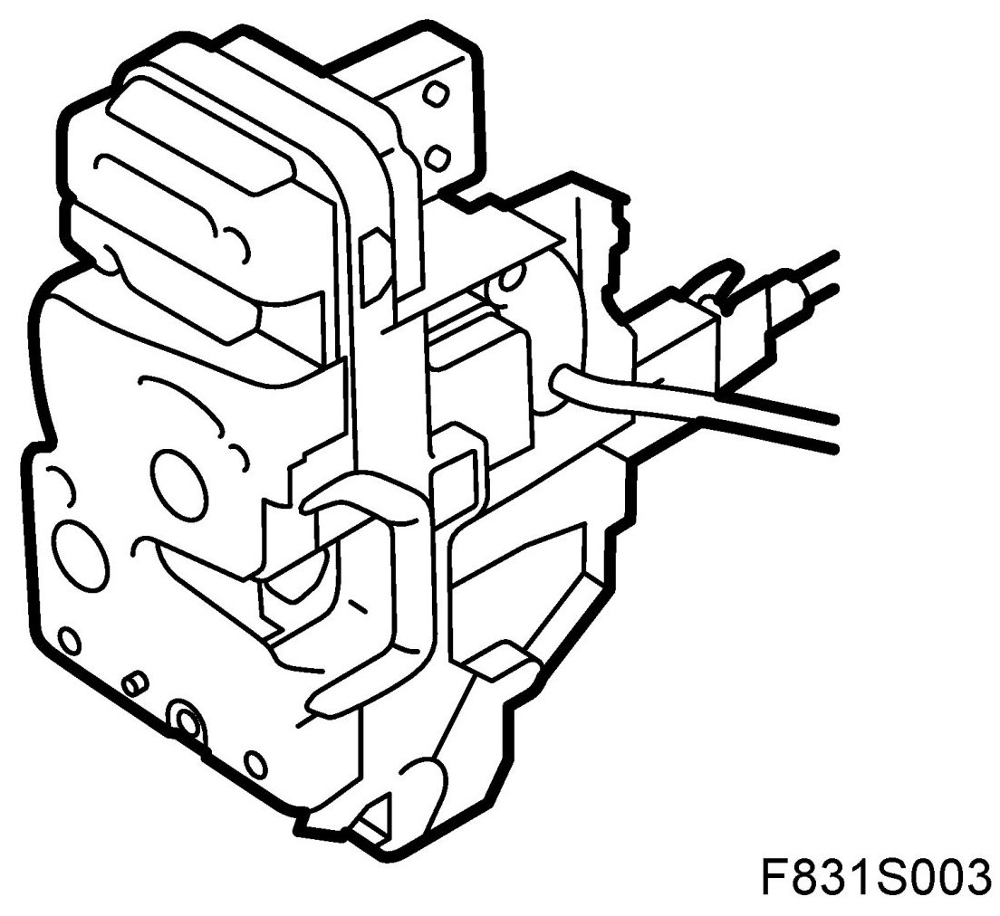
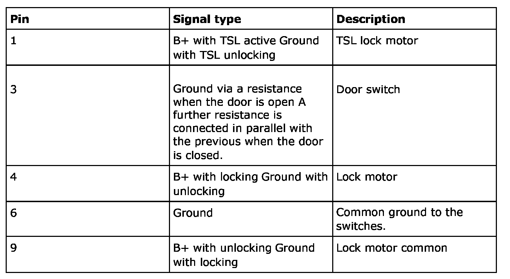
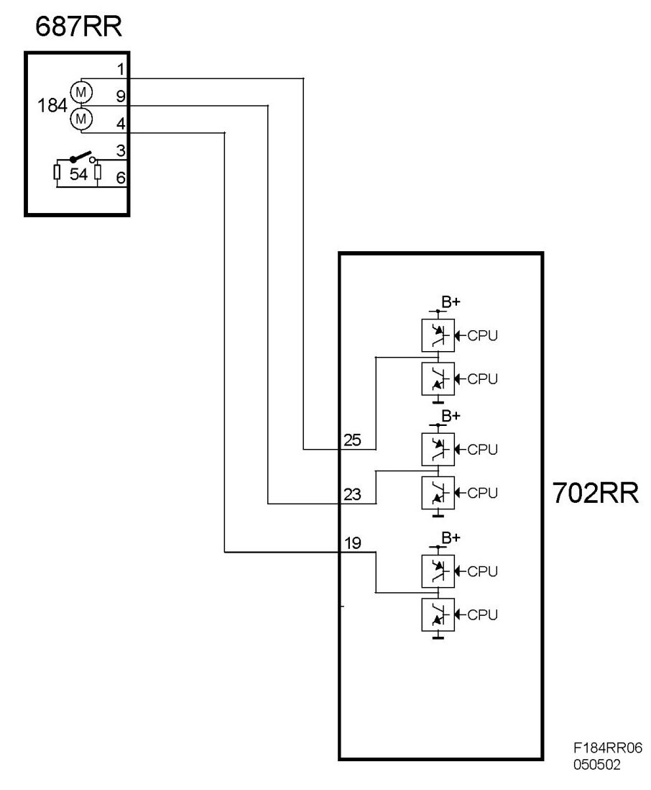

Central Locking System Motor, Right Rear Door (184RR)
Central Locking System Motor, Right Rear Door (184RR)
Location
Central locking system motor, right rear door (184RR)
Main task
- Locks and unlocks the door.
- TSL locks the door (Theft Security Locking) (not US/CA).
- With a switch, indicate if the door is open or closed, see Switch, right rear door (54RR)
Type
The central locking system motor, which is integrated in the door lock, has one electric motor version without TSL and two versions with TSL. The TSL motor has the task of controlling the ordinary lock motor in the locked position so that the door cannot be opened manually from the inside.
If for some reason the remote control does not work and the car is in the TSL active position the front left door can however be opened using the mechanical emergency key. The polarity of the two motors is reversed to run them in the reverse direction. A switch indicates the status of the door.

Connect
Electric motor
The motors are 2 pole and connected with their own separate wiring and common wiring to the door control module.
Switches
The switch has a ground and a signal lead connected to the door module. The door module feeds the switch with B+ via a resistor integrated in the control module. For the door the resistance is 100 kohm. The control module input is digital. A voltage greater than 2V is interpreted as an open circuit, and lower than 2V as a closed circuit.
NOTE: All cables in the wiring harness to the motor are black in order to impede car theft. The lock motor's connector has a guard to impede removal via the window channel.

